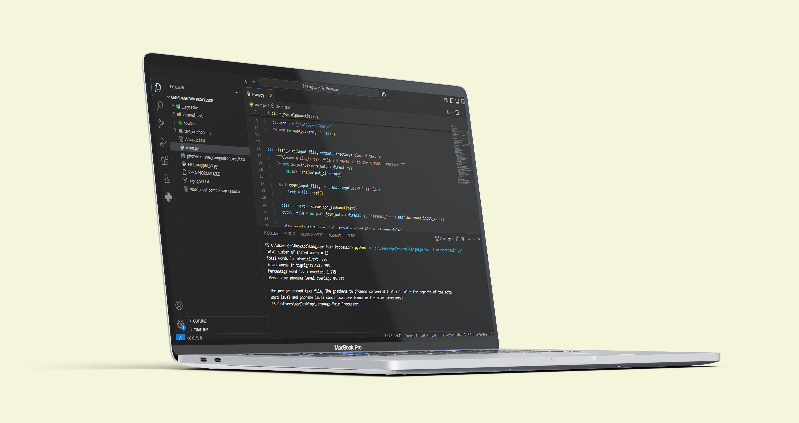

Verba

Overview:
This project explores the linguistic similarities between Amharic and Tigrigna by analyzing word-level and phoneme overlap between the two languages. It uses Python programming and phoneme conversion tools like sera, the study quantifies the degree of overlap, providing insights into the structural and phonetic relationships between these closely related Semitic languages.
Technology Stack:
- Language: Python
- Regular Expressions
- CLI
- SERA-based G2P conversion
- Persistence: Stores results in local file system.
Features:
- Data Preprocessing
- Phoneme Conversion
- Word-Level Comparison
- Phoneme-Level Comparison
- Reporting & Output
Development:
It was developed to quantify the degree of similarity between Amharic and Tigrigna by comparing word-level and phoneme overlaps. By using phoneme conversion algorithms the study provides a good explanation on the linguistic relationship between the two languages.
Lessons Learned:
- Linguistic Insight
- Practical Python Skills
- Data Analysis & Similarity Metrics
- Grapheme-to-Phoneme (G2P) Conversion